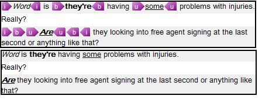

Text Formatting
Complex documents often contain formatting and styles. For example, most editors support character formats such as bold, italic, and underline.
Semi-WYSIWYG formatting support allows a framework-based editor to display common character formatting information. During parsing, a native processor converts formatting from an external editor such as Microsoft Word into the framework's semi-WYSIWYG formatting objects. The framework can persist these objects in a bilingual file format, including its XLIFF-based format, and read them back when it opens the document.
To apply character formatting, use the Sdl.FileTypeSupport.Framework.Formatting class. This class provides the basic formatting properties that native and bilingual filters use.
Apply formatting properties to IStartTagProperties. You can assign multiple IFormattingItem objects to a single Formatting property. The text then receives all formatting defined in the opening tag.
IStartTagProperties and IEndTagProperties include a CanHide property that lets users hide tags. To hide a tag in the editor, set CanHide to true. The semi-WYSIWYG formatting remains visible. This makes the translator's view simpler and easier to read.

For tags that apply only character formatting, set this property to true.
Note
This content may be out-of-date. To check the latest information on this topic, inspect the libraries using the Visual Studio Object Browser.